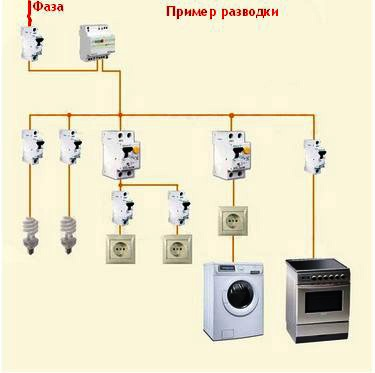
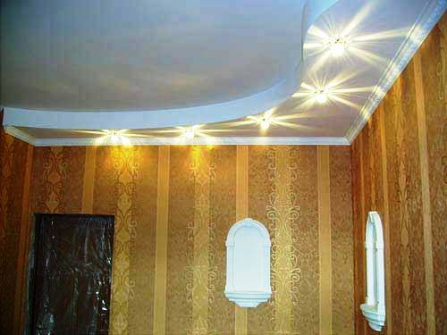
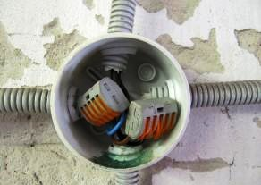

Качественный электромонтаж в Санкт-Петербурге и ленобласти, стаж 12 лет. Частный электрик, недорого и качественно.
Тел. 8 904 642 08 57 Николай.

Качественный ремонт квартирной электропроводки.
Восемь советов от частного электрика.
В данной статье приведены восемь важных советов, которые помогут при ремонте проводки в квартире. Соблюдение этих правил при ремонтных работах гарантирует будущую безопасность и надежность электросети жилья
Ремонт - первое, что делают люди, когда переезжают на другую квартиру.
И не важно – новая она или б/у.
Ремонтные работы включают в себя отделку стен, замену полового покрытия, покраску подоконников, стен, батарей и, конечно же, ремонт электропроводки.
Ремонт электропроводки ни в коем случае не следует опускать, ведь проведя капитальный ремонт, в будущем вам придется вскрывать стены, чтобы устранить неисправности в электросети квартиры.
Капитальный ремонт – самое удобное время, чтобы побеспокоится о замене розеток, выключателей, алюминиевой проводки и так далее. Особенно это необходимо при вселении в дом, построенный в прошлом веке, ведь тогда энергопотребление квартиры было рассчитано на 2-3 кВт, что очень мало для современных бытовых электропотребителей. В этой статье я расскажу восемь самых важных советов, следуя которым вы сможете без проблем отремонтировать электропроводку самостоятельно, существенно сэкономив при этом деньги и время.
1. Составление проекта.
Прежде, чем приступить к ремонту проводки, следует определиться с будущим расположением приборов в квартире. В старых домах розетки и выключатели устанавливались довольно высоко (1 м и 1,5 м соответственно), что было очень неудобно. Проводя ремонт электропроводки в доме, вы сами можете определить наиболее оптимальную высоту размещения данных приборов. Розетки и выключатели можно разместить соответственно «евростандарту» на высоте 0,4 м и 0,8 м от пола. Чтобы под ногами не путались удлинители, не следует экономить на количестве розеток. Также заранее нужно подобрать подходящее для каждой комнаты освещение. Каждый выбирает соответственно своему вкусу, ведь кому-то нравятся большие люстры, а кому-то точечные светодиоды.
2. Меняем проводку во всех комнатах
Все электрики настоятельно рекомендуют не проводить частичных замен электропроводки. Если вы планируете ее менять, то сделайте это во всех комнатах. Это особенно касается квартир, где разводка электропроводки выполнена алюминиевыми проводами.
Полную замену следует проводить по трем причинам:
- алюминиевые провода недолговечны и значительно уступают по характеристикам медным проводам;
- соединение медных и алюминиевых проводов крайне нежелательно;
- при замене проводки требуется выполнять штробление стен, поэтому капитальный ремонт – подходящее время для полной замены проводки в жилье, когда мебель отсутствует.
3. Рассчитываем потребление квартиры.
Потребление квартиры необходимо рассчитать до проведения ремонта или замены проводки. Для этого следует провести суммирование мощностей всех приборов, которые будут питаться от одной линии. Мощность на отдельных линиях не должна превышать 5 кВт. На каждую линию ставится отдельный автомат. Для розеточных линий, сечение проводов которых 2,5 кв. мм, ставится автомат на 25 А. для линий освещения, для которых используется проводка сечением 1,5 кв. мм, ставится автомат на 16 А.
4. Никакой экономии.
Проводя электромонтажные работы, не следует стараться сэкономить на материалах. От этого зависит не только пожаробезопасность квартиры, но и жизнь ее жителей. Кроме того, от качественного материала будет зависеть и нормальная работа электросети жилья. Для монтажа розеточных и осветлительных линий лучше всего подходят кабели марок ВВГнг 3х2.5 и ВВГнг 3х1.5. Розетки и выключатели следует выбирать с хромированными или никелированными контактами. Как уже упоминалось выше, на каждую линию стоит приобрести по автомату и хорошо, если один-два автомата у вас будет на запас. Это позволит провести быструю замену автоматического выключателя в случае сгорания установленного.
5. Удобно размещаем распаечные коробки и электрощиток
Всем, кто хоть немного знаком с электромонтажными работами, известно, что соединение и ответвление проводов проводится в специальных электрокоробках. Распаечные коробки следует монтировать в доступных местах, чтобы в любой момент можно было получить к ним доступ. Щиток часто ставится на лестничных площадках, но лучше будет, если вы его перенесете в квартиру. Тогда вы сами сможете устанавливать необходимое количество автоматов и УЗО, а также проводить их быструю замену. В общих электрощитах, установленных на лестничной площадке, электрикам-любителям сложно разобраться.
6. Правильно проводим соединение проводов
Очень важный этап при ремонте электропроводки – соединение жил кабелей. Произвести быстрое и надежное соединение проводов можно в клеммниках WAGO. Также можно сделать скрутку проводов с последующей сваркой или пайкой места соединения. Последние методы считаются самыми надежными и качественными, поскольку при их проведении место контакта имеет большую площадь.
7. Приобретаем материал с запасом
Я уже говорил о преимуществах наличия в доме запасного автомата. Кроме резервного автоматического выключателя, в доме должны быть запасные розетки, выключатели и распаечные коробки. Если все есть под рукой, то не придется бегать по городу поздним вечером в поисках открытого магазина электротоваров.
Соблюдаем правила техники безопасности
Этот пункт самый важный. Всегда помните о собственной безопасности и безопасности своих близких. Не спешите, проводя монтажные работы. Выполняйте все аккуратно и тщательно проверяйте надежность соединений, качество контактов и прочее. Если вы незнакомы с электромонтажными работами, то ни в коем случае не проводите ремонт проводки своими силами.


Сколько будут стоить материалы.
Замена электропроводки в панельном доме.
Расценки на электропроводку квартир.
Сколько стоит замена электропроводки в двухкомнатной квартире?.
Сколько стоит проложить проводку в 3 ком квартире?
Сколько стоит проложить проводку в четырехкомнатной квартире?
Сколько стоит сделать внутреннюю проводку?.
Установка люстр и светильников.
Замена электропроводки в панельном доме.
Электромонтаж проводов в бане.